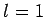
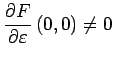

Inhalt Index DeskTop Bronstein

 Dynamische Systeme und Chaos Bifurkationstheorie, Wege zum Chaos Bifurkationen in Morse-Smale-Systemen Lokale Bifurkationen nahe einem periodischen Orbit
Dynamische Systeme und Chaos Bifurkationstheorie, Wege zum Chaos Bifurkationen in Morse-Smale-Systemen Lokale Bifurkationen nahe einem periodischen Orbit


Gegeben sei das System (17.17) mit und . Das System (17.17) habe bei  den periodischen Orbit
den periodischen Orbit  mit den Multiplikatoren und
mit den Multiplikatoren und  .
.
Nach dem Satz über die Zentrumsmannigfaltigkeit für Abbildungen werden Bifurkationen in der POINCARÉ-Abbildung (17.28) durch die eindimensionale reduzierte Abbildung (17.30) mit Ac = 1 beschrieben. Wird dabei und  vorausgesetzt, so führt dies auf die Normalformen
(bei bzw. (bei . Die Iterationsverläufe von (17.31) nahe 0 und die zugehörigen Phasenporträts sind für verschiedene  in den folgenden beiden Abbildungen zu sehen (s. Lit. 17.1).
in den folgenden beiden Abbildungen zu sehen (s. Lit. 17.1).
Für  liegen eine stabile und eine instabile Ruhelage nahe x = 0 vor, die für
liegen eine stabile und eine instabile Ruhelage nahe x = 0 vor, die für  in der instabilen Ruhelage x = 0 verschmelzen. Für
in der instabilen Ruhelage x = 0 verschmelzen. Für  existiert keine Ruhelage nahe
existiert keine Ruhelage nahe  . Die durch (17.31) beschriebene Bifurkation in (17.30) heißt subkritische Sattelknoten-Bifurkation für Abbildungen.
. Die durch (17.31) beschriebene Bifurkation in (17.30) heißt subkritische Sattelknoten-Bifurkation für Abbildungen.
Für die Differentialgleichung (17.17) beschreiben die Eigenschaften der Abbildung (17.31) die Bifurkation eines zweifach zusammengesetzten semistabilen periodischen Orbits: Bei  existieren ein stabiler periodischer Orbit
existieren ein stabiler periodischer Orbit  und ein instabiler periodischer Orbit , die bei
und ein instabiler periodischer Orbit , die bei  zu einem semistabilen Orbit
zu einem semistabilen Orbit  verschmelzen, der sich bei
verschmelzen, der sich bei  auflöst (s. Abbildung).
auflöst (s. Abbildung).